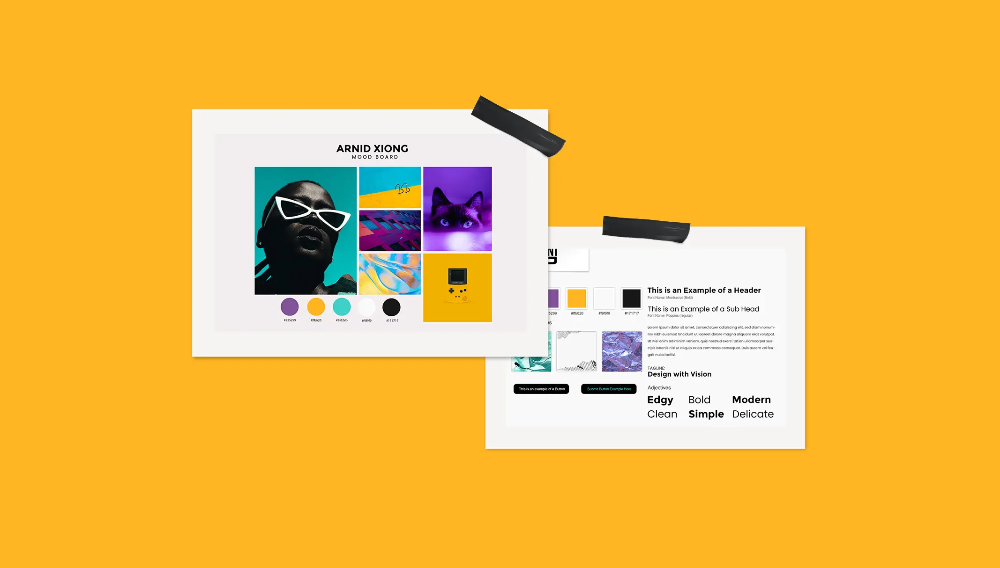

See More
The project was to build a website using Wordpress. I get to explore a variety of Wordpress themes, plug-ins and even learn how to do HTML and CSS. During the process, I used mind map from Coggle to help me brainstorm my ideas and how I wanted to arrange my contents, imagery, and space. Next, I explore possible colors that I wanted to work with by creating myself a moldboard of inspiration. Then proceeding with sketching wireframes and layouts of how I wanted each of the web pages to look like.
See More